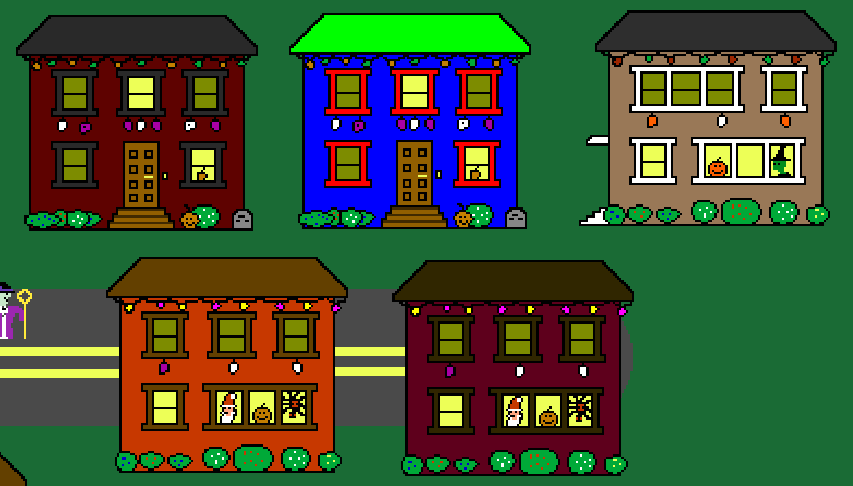
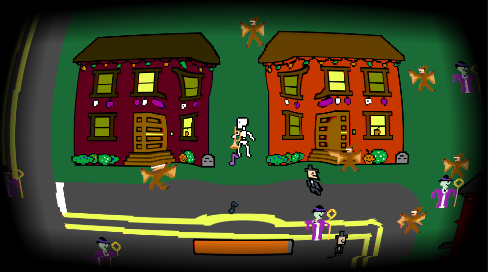
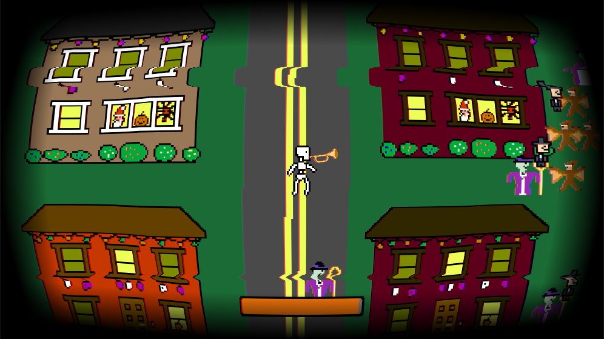
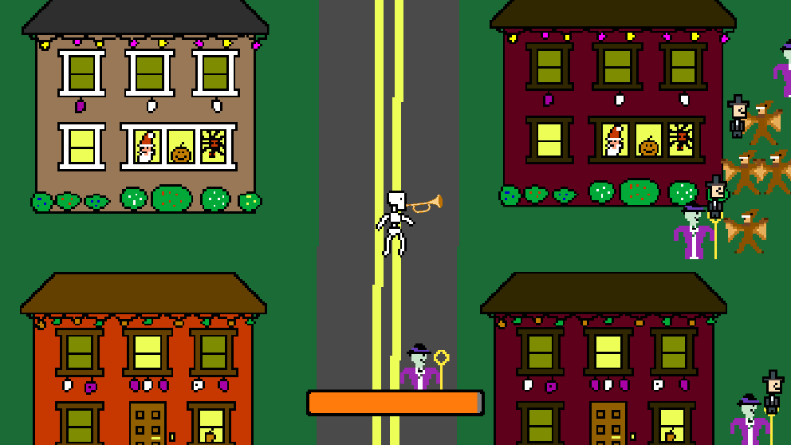

Doots Never Die
Implemented image-processing shaders, targeting, and area-of-effect logic in a team-built Unity game delivered as a web build.
-
Overview
Doots Never Die is a team-built Unity arcade game with a browser-playable build. I implemented post-processing shaders, targeting, projectile behavior, and area-of-effect interactions, and contributed most of the pixel art.
-
Engineering contributions
I implemented a CRT-style post-processing shader combining parabolic image distortion, edge darkening, moving screen-tear bands, time-varying red and blue channel offsets, and scanlines. These effects run together as an image-processing stage.
-
Another image processing shader is being used on the house sprites for key-coloring. The texture for the houses uses red for the window frames, blue for the walls, and green for the roof. An image processing shader is set with a random house color theme at the start of the game for each house. Depending on the theme selected, the house will change color.

-
I implemented shooting, targeting, and an area-of-effect action. The area effect also drives an expanding, dissipating shockwave in the post-processing shader, linking application behavior to visual feedback.

-
I also made most of the pixel art used in the main game. The only pixel art that I didn't make was two of the children and the trumpet.


